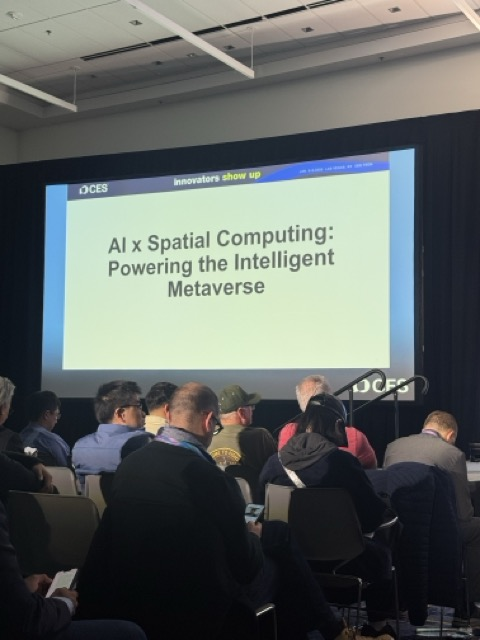
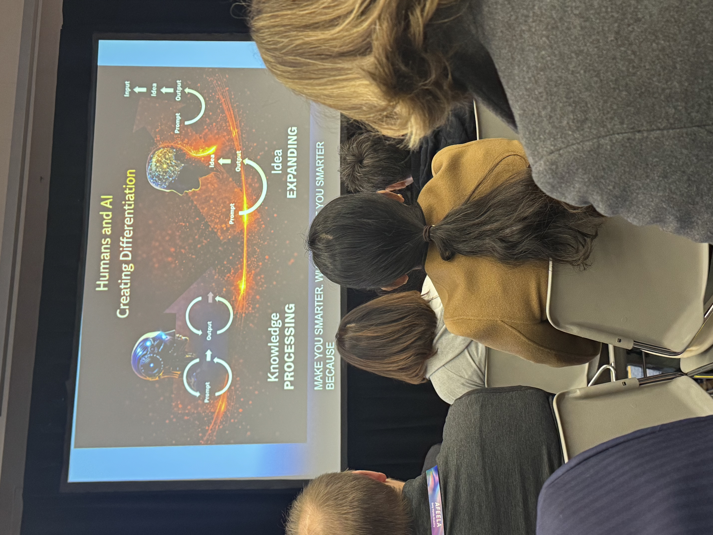

The robots and autonomous vehicles got their own post. But CES 2026 had two more threads I didn't want to bury: the maker movement had an unexpectedly big floor presence, and a few sessions delivered ideas worth carrying home.
This is part three of my CES 2026 report. Start with part one: smart glasses, or read part two: robots and autonomy.
The Makers Had a Huge Presence
I'll admit this section is personal. I have a Creality Raptor Pro at home that I'm still learning to use properly. So seeing Creality with one of the most vibrant booths on the floor (filament in every color, 3D-printed objects everywhere, a crowd of actual makers) felt validating.
XTool had a full Production Hub setup. EufyMake showed off the E1, the first personal 3D-texture UV printer. It raised $46.7 million on Kickstarter, which is apparently a record for the design and technology category. Epilog Laser had laser-cut guitars and skateboards on display.
The tools of physical fabrication are catching up to the tools of digital creation. The gap between "I had an idea" and "I made the thing" is closing fast.
The Sessions That Stuck With Me

By Day 2, a theme had crystallized: what stood out wasn't just how advanced the technology has become, but how urgently organizations need to adapt their people, processes, and operating models to keep up. Most of the conversations I was having, in sessions and in hallways, were about change management, skills evolution, and trust.
A session on AI and the workforce kept coming back to one idea: AI + OI = Differentiation. OI being Original Intelligence: your judgment, your taste, your relationships, your lived experience. The argument was that AI doesn't replace any of that. It amplifies it.

Deloitte had a wall in their space that said: "Learn how digital twin technology turns complexity into clarity." Next to a McLaren Formula 1 car. The tagline was "From twin to track." A good reminder that the most interesting applications of emerging technology aren't usually the flashy demos. They're the places where technology quietly solves a real operational problem.
The Through-Line
Makers printing objects. AI amplifying human judgment. Digital twins turning complexity into something actionable. These aren't separate trends. They're the same story told at different scales: the gap between idea and execution keeps shrinking.
That's the part of CES 2026 I'm still thinking about. Not just what the technology can do, but what it makes possible for the person holding it.